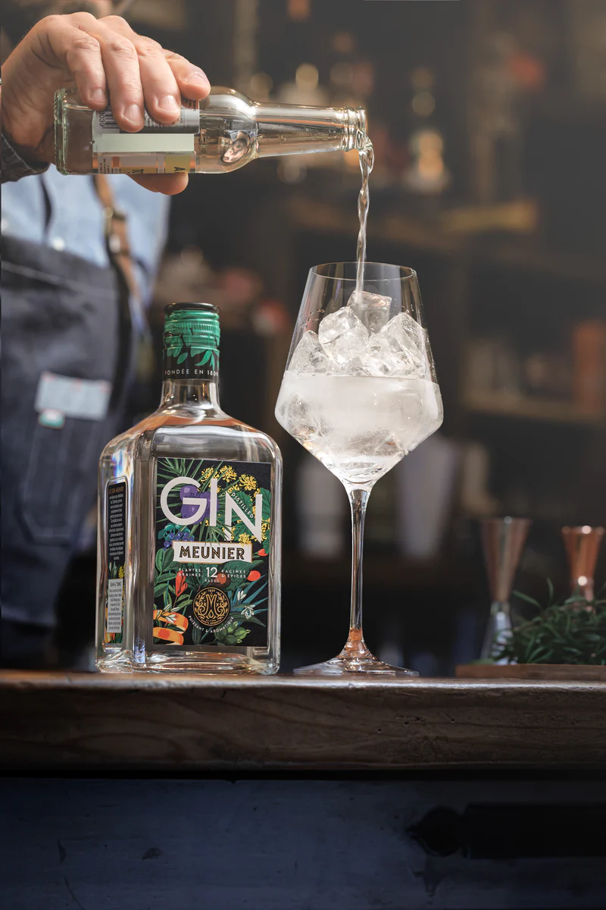

Le gin est une boisson alcoolisée à base de grains neutres aromatisés avec des baies de genièvre et d'autres plantes, herbes et épices. Il est produit dans de nombreux pays du monde, mais il est souvent associé à l'Angleterre, où il est apparu pour la première fois au XVIIe siècle.
Le gin est souvent utilisé dans les cocktails, en particulier dans le gin tonic, le Negroni et le martini. En fonction des ingrédients utilisés pour l'aromatisation, le gin peut avoir un goût très varié, allant de sec et vif à floral et fruité.
Il existe également différents styles de gin, tels que le gin londonien sec, le gin de Plymouth, le gin américain, le gin hollandais et le gin espagnol, chacun ayant ses propres caractéristiques et profils de saveurs distincts.
En somme, le gin est une boisson alcoolisée très populaire et versatile qui peut être appréciée à la fois comme une boisson délicieuse en solo ou comme base pour une variété de cocktails classiques et contemporains.
